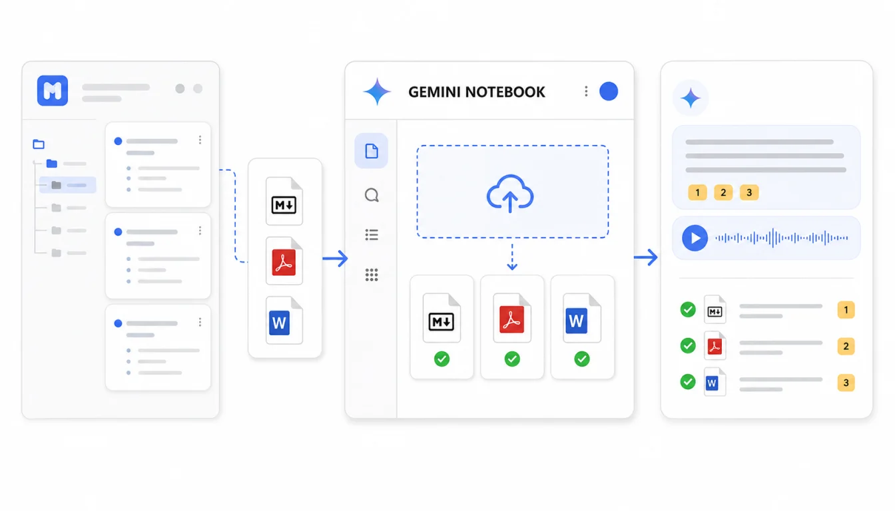

如果你想把幕布里的读书笔记、课程笔记、会议纪要和研究资料交给 AI 辅助理解，推荐路线是“按主题导出 → 上传到 Gemini Notebook / NotebookLM → 用引用验收回答”。它更像个人研究知识源，不适合把全部幕布资料无差别塞进去。
Google 的 NotebookLM 入口和 Gemini Notebook 能把多个资料源放进一个 Notebook，然后围绕这些来源做摘要、问答、引用和音频概览等工作。根据 2026年7月17日 的官方帮助文档，支持的资料源类型和数量限制会随产品更新变化，上传前应以当前页面提示为准。
快速答案：从幕布中按一个研究主题筛选资料，用 Mubu Exporter 导出 Markdown 或 Word；定稿资料可导出 PDF；同时保存 JSON 备份；上传到 Gemini Notebook / NotebookLM 后，先问 5 个你知道答案的问题，检查回答是否引用正确来源，再用它做摘要、对比和研究提纲。

它和 Dify、Coze 知识库有什么不同？
Dify 和 Coze 更适合把知识库接到应用或智能体里；Gemini Notebook / NotebookLM 更像一个围绕资料源工作的研究桌面。你可以把一组资料放进去，让 AI 帮你做摘要、对比、问答和整理，但它不等于正式的团队知识库权限系统。
| 工具路线 | 更适合 | 幕布资料准备重点 |
|---|---|---|
| Dify 知识库 | RAG 应用、内部问答、工作流 | 分段、检索和应用验收 |
| 扣子/Coze 知识库 | 智能体问答、客服、销售、内部 SOP | 场景边界和权限交接 |
| Gemini Notebook / NotebookLM | 研究、学习、会议复盘、资料阅读 | 主题聚焦和引用检查 |
所以这篇不建议你创建一个“我的全部幕布笔记”Notebook，而是建议按主题拆分，例如“AI 产品研究”“2026 Q3 项目复盘”“某本书的读书笔记”。
适合导入的幕布内容
- 读书笔记：章节摘要、摘录、自己的评论。
- 课程笔记：知识点、案例、作业、参考链接。
- 会议纪要：背景、决策、行动项、待确认问题。
- 论文和报告阅读：研究问题、方法、结论、局限。
- 项目复盘：时间线、问题、结论、后续计划。
不适合直接导入的内容包括个人隐私、账号密钥、未经授权的协作文档、过期草稿和只有图片没有文字说明的资料。
格式怎么选：Markdown/Word 适合研究，PDF 适合定稿
| 导出格式 | 适合放进 Notebook 的场景 | 建议 |
|---|---|---|
| Markdown | 读书笔记、会议纪要、课程笔记 | 结构清楚，适合持续更新和二次编辑 |
| Word | 需要先人工整理再上传的资料 | 适合审阅、改标题、补说明 |
| 定稿报告、教材、白皮书、公开资料 | 上传后重点检查引用和页码定位 | |
| HTML | 人工预览和打印 | 可作为对照，不一定作为主上传格式 |
| JSON | 原始结构备份 | 留在本地，必要时重新生成更干净的资料源 |
幕布里的大纲节点很多时候就是研究框架。Markdown 可以把这些层级保留下来，后续你问“这份资料有哪些争议点”“请按章节总结”“行动项有哪些”，更容易回到原有结构。
第一步：按主题导出幕布资料
- 在幕布中选定一个主题目录，例如「AI 产品研究」或「读书笔记/组织行为学」。
- 用 Mubu Exporter 扫描文件信息，确认文档数量。
- 导出 Markdown，作为主要上传资料。
- 如果资料准备交给别人审阅，再导出 Word。
- 如果是不可修改的定稿资料，再导出 PDF。
- 导出 JSON，作为本地备份和重做转换依据。
推荐目录结构：
GeminiNotebookSources/2026-07-17/
ai-product-research/
Markdown/
PDF/
JSON/
upload-list.md
upload-list.md 可以记录本次上传了哪些文件，后续如果 Notebook 回答异常，你能快速定位来源。
第二步：上传前整理文件名和上下文
AI 研究工具很依赖来源上下文。幕布导出后，建议先做三件事：
- 把文件名改成可读标题，例如
2026-Q2-用户访谈结论.md。 - 在文档开头补一句来源说明，例如“这是 2026 年第二季度用户访谈的汇总”。
- 给图片、表格、外部链接补文字解释，避免资料只剩一个无法理解的链接。
如果你把同一个主题的多个年份资料放进一个 Notebook，标题里一定要包含年份。否则 AI 做总结时容易把旧资料和新资料混在一起。
第三步：创建 Notebook 并上传资料源
进入 Gemini Notebook / NotebookLM 后，新建一个 Notebook，按主题上传资料源。上传完成后不要急着让它写长报告，先做基础检查：
| 检查项 | 怎么问 | 通过标准 |
|---|---|---|
| 来源数量 | 这个 Notebook 里有哪些资料？ | 能列出你刚上传的核心资料 |
| 标题层级 | 请按原文结构总结某篇笔记 | 章节顺序与幕布原文一致 |
| 引用可靠性 | 某结论来自哪份资料？ | 回答带有正确来源引用 |
| 资料边界 | 问一个未上传资料里的问题 | 不会编造不存在的来源 |
| 时间线 | 按时间整理项目事件 | 不会混淆不同年份资料 |
第四步：用它做三类研究任务
1. 读书和课程摘要
适合问：“请按章节总结这本书的核心观点”“作者的三个主要论据是什么”“哪些内容和我的项目有关”。注意让它引用来源，不要只生成顺滑摘要。
2. 会议和项目复盘
适合问：“本季度反复出现的问题有哪些”“哪些行动项还没有负责人”“这几次会议对同一个问题的结论是否冲突”。幕布会议纪要导入后，Notebook 可以帮你跨文档比对。
3. 研究资料对比
适合问：“A 报告和 B 报告对市场规模的判断差异在哪里”“哪些证据支持这个结论”“请把反方观点列出来”。这类任务尤其需要看引用，避免 AI 把不同来源拼成一个看似确定的结论。
第五步：保留幕布和本地备份
Notebook 是研究工作区，不是唯一备份。迁移后仍建议保留：
- 幕布原文档，至少保留到你完成验收。
- Markdown 目录，便于重新上传和跨工具迁移。
- JSON 目录，保留原始节点结构。
- HTML 或 PDF，对照人工阅读和打印。
如果你之后准备把同一批资料接到 Dify 或 Coze，Markdown 和 JSON 会继续有用。不要把 Notebook 当成所有资料的最终仓库。
常见问题
NotebookLM 和 Gemini Notebook 是同一个东西吗？
Google 在不同入口和帮助文档中使用 NotebookLM 与 Gemini Notebook 相关命名。对普通用户来说，核心工作流是一样的：创建 Notebook，上传资料源，围绕来源提问和生成摘要。实际入口和名称以你当前 Google 产品页面为准。
幕布的备注会不会丢？
Mubu Exporter 导出 Markdown 时会把备注转换为引用块或可读内容。导入后仍建议抽查备注很多的文档，确认它们没有被当成无关内容忽略。
能不能上传整个幕布导出的 ZIP？
不建议把全部资料压成一个巨大包。Notebook 更适合按主题上传一组资料。文件数量、大小和格式限制可能变化，上传前以当前产品页面提示为准。
AI 生成的摘要可以直接发布吗？
不建议。Notebook 的价值是帮你整理来源和发现线索，正式发布前仍要回到引用来源核对事实、时间、数字和原文含义。
总结：把幕布变成研究资料源，而不是一次性搬家
Gemini Notebook / NotebookLM 最适合处理聚焦主题的资料包。幕布导出工具帮你把大纲笔记批量变成 Markdown、Word、PDF 和 JSON，Notebook 则帮你围绕这些来源提问、摘要和对比。
真正好用的流程不是“全部上传”，而是“按主题组织、按来源验证、按问题使用”。这样 AI 才是在帮你研究，而不是替你制造一份难以追溯的总结。
相关链接：